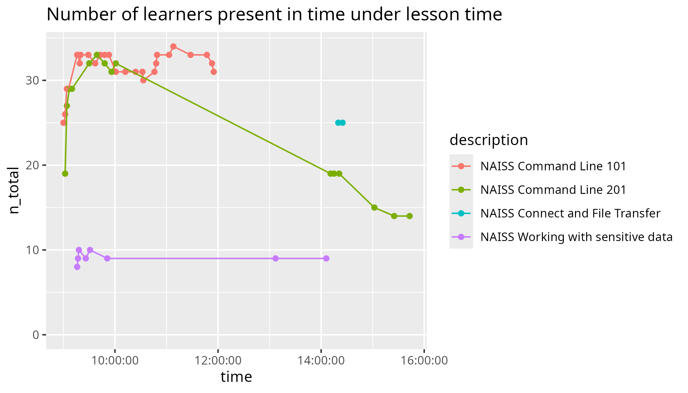
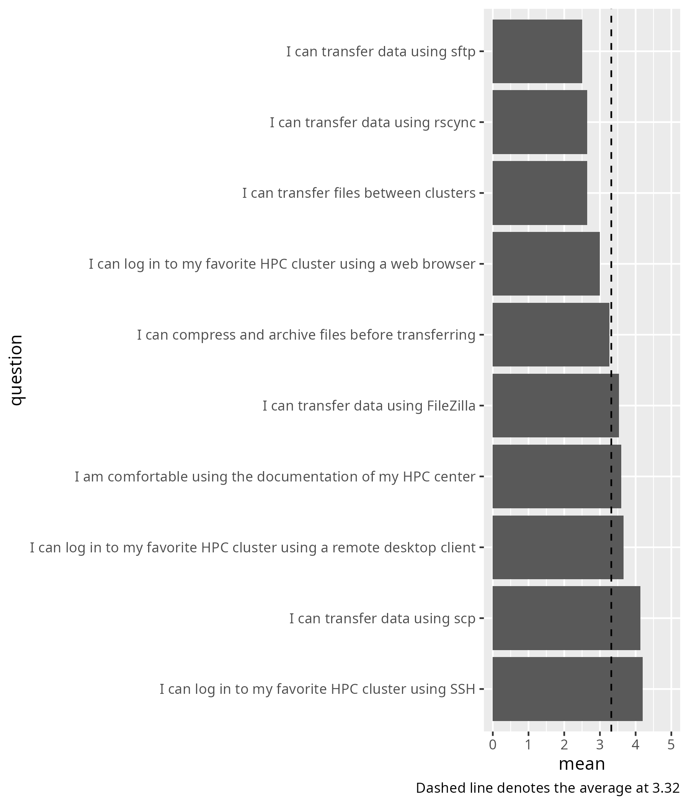
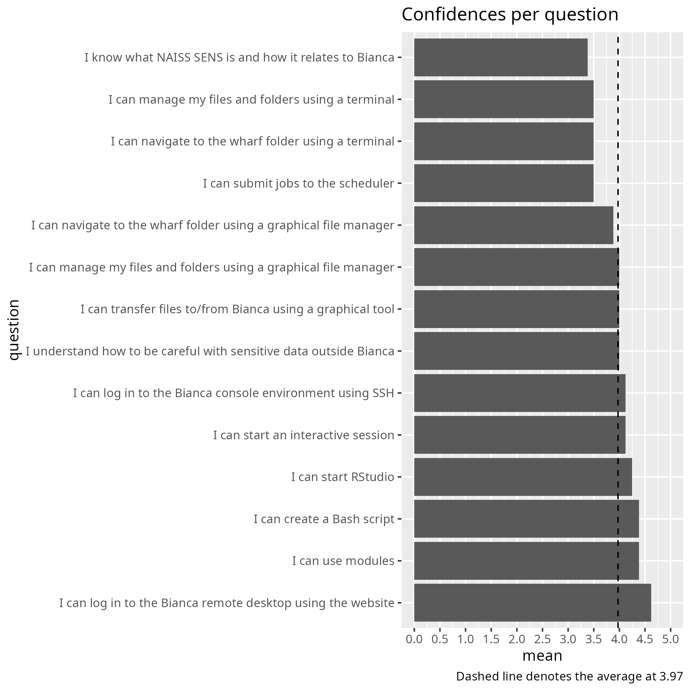

NAISS Intro Week February 2026¶
This is one of my reflections.
Recommendation¶
Continuously take feedback like this and the NAISS Intro Week will naturally get better and better over time :)
- Give teachers the time they need for the exercises
- Introduce HPC clusters properly
Recommendation 1: Give teachers the time they need for the exercises¶
I think the NAISS Intro Week should be a gentle and easy first week to work with our HPC clusters. I would say it is more important to adapt to our learners than fit in as much content as possible.
Some courses do not (dare to?) schedule enough time for exercises. Our learners will state this on the evaluations.
How do learners state this?
| Quote | Source |
|---|---|
| The more hands-on exercises the better | Command Line 101 |
| Would like more/more time | Command Line 101 |
| Extended time for type along or exercices | Selecting software modules |
| As a beginner I maybe would have needed a little more time on the exercise. | Selecting software modules |
| More practical exercises and more time doing the exercises | Selecting software modules |
| would rather have more time for exercises | Selecting software modules |
| Need more time to do the exercises | Selecting software modules |
| Too short time to try things out | Selecting software modules |
| more exercises would have been nice | Running jobs on clusters |
| Would be nice to have some more hands-on activities | Running jobs on clusters |
| Sometimes a little more time might have been needed for the exercises | 'Command Line 201' evaluation |
| Most of lectures were rather fast, and not much time for exercises | 'Command Line 201' evaluation |
| It was good. I didn't finish all the exercises on on the time given | 'Command Line 201' evaluation |
| Generally good pace, sometimes a bit too fast (ex. 3min to try things yourself) | 'Command Line 201' evaluation |
| The pace was ok if one have some experience, otherwise probably a bit fast | 'Command Line 201' evaluation |
| The course materials are very good, though lectures were rather fast | 'Command Line 201' evaluation |
| I would suggest more time for doing exercises | 'Command Line 201' evaluation |
However, some sessions ('Connect and File Transfer' and 'Working with sensitive data') do schedule the majority of time on exercises.
For 'Connect and File Transfer', however, the time was still too short.
Why is the time too short?
- The learners say this: 2 out of 15 learners mentioned that in their feedback:
| Quote | Source |
|---|---|
| Awesome course, but it would be nice to have more time | 'Connect and File Transfer' evaluation |
| I think I would have needed more time to figure everything out | 'Connect and File Transfer' evaluation |
- The learning outcomes show it: this course had the lowest success score (i.e. percentage of complete confidence in the learning outcomes) of all three courses I taught
- Other courses show this: The schedule of the 'Intro to Bianca' course shows two hours for this. The learner-centered 'Intro to UPPMAX' schedule provides for this.
When teachers are given the time they need to teach properly, which was on 'Working with sensitive data' this shows.
How does this show?
| Quote | Source |
|---|---|
| The last day had the biggest learning outcome | 'Working with sensitive data' evaluation |
I recommend to give teachers the time they need for the exercises.
In practice:
- Make 'Connect' (of 'Connect and File Transfer') at least 2 hours
- Make 'File Transfer' (of 'Connect and File Transfer' at least 2 hours
Recommendation 2: Introduce HPC clusters properly¶
Maybe it was only on the last day (Day 5, 'Working with sensitive data'), that there was enough time for exercises.
Here is an interesting evaluation quote:
but I didn't really understand what an HPC cluster until the last day
For a center that provides HPC clusters, this seems like a miss to me.
Other learners mentioned this earlier, such as the 'Connect and File Transfer' feedback:
I think it would have been better to start the day by explaining what an HPC cluster is, then practicing logging into the cluster, then having LINUX 101 and after that having the file transferring course.
Another learners indicated too he/she does not understand the concept, from the 'Connect and File Transfer' feedback:
There are different clusters (I think this is the name?)
I recommend to properly introduce HPC clusters.
In practice:
- Schedule at least 1 hour for this
- Make this part of 'Connect' (of 'Connect and File Transfer')
Appendix¶
Part of my 'Connect and File Transfer' reflection¶
Due to this I recommend:
- 1 hour for introduction to HPC, including SUPR
- 2 hours for the 'Connect' part
- 3 hours for the 'File transfer' part
Having this course the full first day would help even the utmost beginner to have an easy first day on our HPC clusters. I think we should prefer this over rushing our new users.
Number of learners present¶
Data and scripts can be found at my teaching data.

Learners registering, showing up and filling in an evaluation form¶
| Course | n_registrations |
n_showing_up |
n_evaluations |
Source |
|---|---|---|---|---|
| Connect and File Transfer | 64 | 25 (41% show-up rate) | 15 (60% fill-in rate) | Course evaluation |
| Command line 201 | 64 | 19 (30% show-up rate) | 13 (so far) (68% fill-on rate) | Course evaluation |
| Working with sensitive data | 43 | 9 (21% show-up rate) | 8 (89% fill-in rate) | Course evaluation |
Learning outcomes achieved¶
| Course | Learning outcomes achieved | Source |
|---|---|---|
| Connect and File Transfer |  |
URL |
| Command Line 201 |  |
URL |
| Working with sensitive data |  |
URL |
{kind=link}
{kind=link}
{kind=link}
Overview of my teaching¶
| When | Duration | What | Lesson plan | Evaluation | Reflection |
|---|---|---|---|---|---|
| 2025-02-06 | Full day | Working with sensitive data | Lesson plan | Evaluation | Reflection |
| 2026-02-04 | Full day | Command Line 201 | Lesson plan | Evaluation | Reflection |
| 2026-02-02 | Half day | NAISS Connect and File Transfer course | Lesson plan | Evaluation | Reflection |